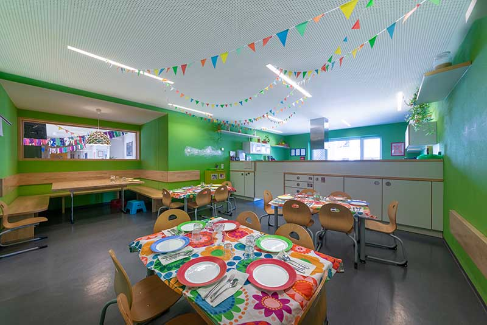
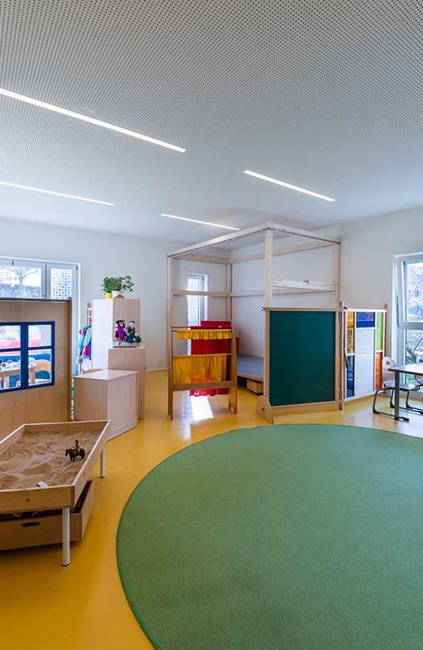

Erzieher/in (m/w/d)
Wir suchen eine staatlich anerkannte Erzieherin (m/w/d), Kindheitspädagogin (m/w/d) oder pädagogische Fachkraft nach § 7 KiTaG (m/w/d) in Voll- oder Teilzeit.
Wir sehen uns als Unterstützer/in, Berater/in und Partner/in Ihres Kindes – in einem lebendigen, von gegenseitiger Achtung geprägten Miteinander.

Ein Kind ist kein Gefäß, das gefüllt, sondern ein Feuer, das entzündet werden will!François Rabelais, französischer Humanist, Arzt und Schriftsteller
Wie schon Rabelais im 16. Jahrhundert erkannte, entwickelt ein Kind nur dann die Fähigkeit zur Eigeninitiative und zur Selbstbestimmung, wenn der äußere Rahmen seine Kompetenzen auch wahrnimmt und diese bewusst fördert. Wir als Erzieher/innen sehen uns daher als Unterstützer/in, Berater/in und Partner/in Ihres Kindes.
Wir nehmen es sensibel wahr, beobachten und dokumentieren seine Entwicklung und erarbeiten auf dieser Basis ein Handlungskonzept, das Ihr Kind individuell unterstützt und es zur Mündigkeit und Verantwortung führt. Daher leben wir im Kinderhaus St. Suso ein lebendiges und von gegenseitiger Achtung geprägtes Miteinander, in welchem sich Ihr Kind frei entfalten kann.
Schwerpunkte
Um die pädagogische Qualität zu sichern, nehmen wir sowohl als Team als auch jede/r einzelne Erzieher/in regelmäßig an Fortbildungen teil.

Unser soziales Umfeld
Unser Kinderhaus St. Suso wird von der Kirchengemeinde Konstanz-Petershausen getragen und liegt im Taborweg 36. Direkt an die Kirche St. Suso und deren Gemeindezentrum grenzend, ist unser Kinderhaus nicht nur von den Ein- bis Zweifamilienhäusern des Siedlerbundes und den Mehrfamilienhäusern des Spar- und Bauvereins Konstanz umgeben, sondern liegt auch unweit einer Kleingartensiedlung und eines großen Waldgebietes.
Mit der Grundschule Haidelmoos und der Geschwister-Scholl-Schule befinden sich zudem zwei weiterführende Bildungseinrichtungen in direkter Nähe.
Kinder- und Familienzentrum
Ein von der Stadt Konstanz sowie dem Ordinariat Freiburg gefördertes Familienzentrum.
Wir legen großen Wert auf bedarfsorientierte Familienarbeit. Daher sind unsere Angebote individuell auf die Bedürfnisse und Wünsche der Familien abgestimmt. Unser vorrangiges Ziel ist es, Chancengleichheit und gesellschaftliche Teilhabe für alle Familien zu fördern. Wir betrachten die Eltern als Experten ihrer Kinder und bieten ihnen das Kinderhaus als einen Ort, an dem sie ihre Fähigkeiten und Ressourcen einbringen können.
Darüber hinaus bestehen Kooperationen mit weiteren Institutionen im Sozialraum – etwa Altenheimbesuche mit den Kindern, Besuche der Feuerwehr im Kinderhaus sowie die Zusammenarbeit mit anderen Familienzentren.

Die architektonische Gestaltung ist modern und offen, sodass viel Raum für flexible pädagogische Arbeit in vielfältigen Schwerpunktbereichen entsteht. Damit wird das Kinderhaus dem Orientierungsplan des Landes Baden-Württemberg gerecht.
Die Ganztagsbetreuung findet für zwei Ü3-Gruppen sowie in der Krippengruppe für Kinder im Alter von 1 – 3 Jahren statt.
Unser Team setzt sich aus 24 Personen zusammen. Regelmäßige Fort- und Weiterbildungen sind für uns selbstverständlich – jede Fachkraft bringt eigene Schwerpunkte ein.
Unsere Geschichte
Vier Etappen, die aus einem Kindergarten mit 40 Kindern pro Gruppe ein modernes Kinderhaus gemacht haben.

Bau und Eröffnung des Kindergartens Suso der Pfarrgemeinde St. Suso. Jede Gruppe betreut bis zu 40 Kinder. Die Betreuung findet vor- und nachmittags statt; die zweistündige Mittagspause verbringen die Kinder zuhause.
Der KVJS (Kommunalverband für Jugend und Soziales Baden-Württemberg) tritt für eine schrittweise Reduzierung der Gruppenstärke auf circa 30 Kinder pro Gruppe ein. Im Kindergarten Suso findet die Betreuung jedoch weiterhin auf engem Raum statt.
Eröffnung eines Anbaus, um mehr Gruppen zu bilden und damit die Gruppenstärke weiter zu reduzieren.
Eröffnung des heutigen Kinderhauses St. Suso durch den Träger, die Katholische Pfarrgemeinde Konstanz-Petershausen. Dank des umgebauten Altbaus und eines modernen Erweiterungsbaus finden nun 62 Kinder ab 3 – 6 Jahren sowie 10 Krippenkinder im Alter von 1 – 3 Jahren in insgesamt vier Gruppen Platz.
Stellenangebote
Sie möchten Teil unseres Teams werden? Wir freuen uns auf Ihre Bewerbung.
Wir suchen eine staatlich anerkannte Erzieherin (m/w/d), Kindheitspädagogin (m/w/d) oder pädagogische Fachkraft nach § 7 KiTaG (m/w/d) in Voll- oder Teilzeit.
Wir suchen ab sofort eine engagierte und zuverlässige Hauswirtschaftskraft in Teilzeit.
Kinderhausleitung
Stellvertretende Kinderhausleitung
Diese Position ist derzeit unbesetzt – wir freuen uns über Ihre Bewerbung.
Elternbegleiterin · Familienzentrum
familienzentrum.suso@petershausen.net
Tel. 07531 697874
Sie möchten einen Platz anfragen, unser pädagogisches Konzept anfordern oder das Kinderhaus besichtigen? Schreiben Sie uns – wir melden uns zurück.